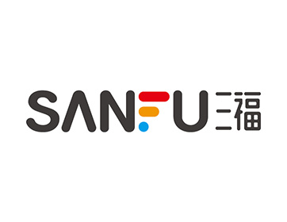

--:--:--
Scan pertama = masuk, scan kedua = pulang. Untuk tes tanpa scanner, ketik nomor karyawan lalu tekan Enter.
Siap menerima scan.

Scan pertama = masuk, scan kedua = pulang. Untuk tes tanpa scanner, ketik nomor karyawan lalu tekan Enter.